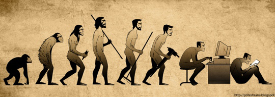

La primera computadora, aunque no lo creamos, fue el abaco. En terminos estrictos, la computadora es el dispositivo que nos ayuda a realizar calculos. En una computadora se debe realizar un proceso de entrada de datos, procesamiento de los mismos y salida.
Hoy en dia las computadoras han avanzado tanto que podemos llegar a realizar grandes procesamientos de datos sin ningun tipo de problema.
